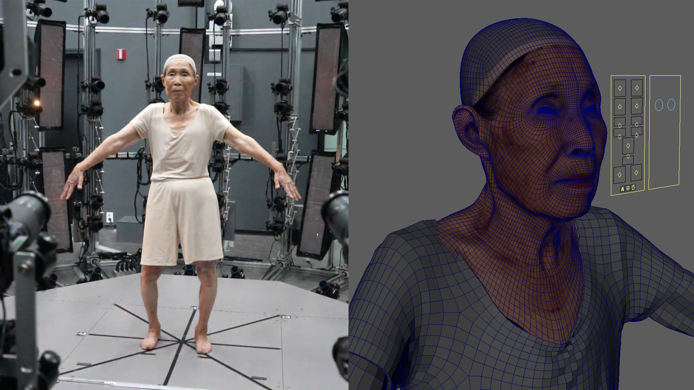

media/home/capture_volumetric.jpg외부 volumetric / 4D capture stage. 캡처 장비 운용이 아니라 downstream production pipeline 협업을 보여주는 이미지.
Capture-to-character requirements
외부 스튜디오에서 캡처된 사람의 데이터를 받아, 캐릭터 제작에 필요한 geometry·texture·파일 조건을 정의하고 모델링, 애니메이션, 렌더링, 엔진 배포가 가능한 형태로 연결했습니다.